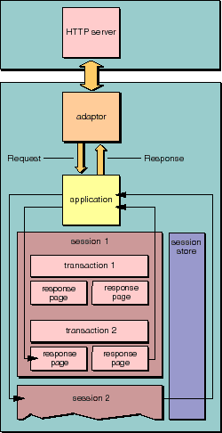

Table of Contents
Table of Contents  Next Section
Table of Contents
Next Section
Table of Contents  Previous Section
Previous Section

Figure 18. Request-Response Loop: Page Level
Represents an integral, reusable page (or portion of a page) for display in a web browser.
Declares the three component action request-handling methods: takeValuesFromRequest:inContext:, invokeActionForRequest:inContext:, and appendToResponse:inContext:. WOElement is an abstract class. Each node in an object graph, which represents the HTML elements of a component and their relationships, is an object that inherits from WOElement.
An abstract class for subclasses that generate particular dynamic elements.
Knows how to find and set a value by reference to a key. WODynamicElement objects generally have WOAssociation instance variables.
Table of Contents Next Section